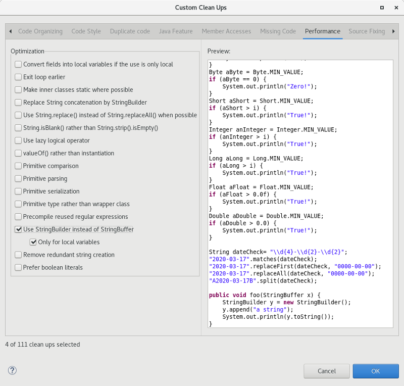

JUnit
Java Editor
StringBuilder (added in Java 1.5) rather than StringBuffer which has synchronized methods and is slower than using StringBuilder.
There is a sub-option where changes will only occur to local variables which is on by default. When this sub-option is on, changes will only occur to StringBuffer variables that are local to a method. When a method calls other methods with such variables or assigns to/from fields/parameters, the method contents will not be converted. It is permitted to append StringBuffer fields or parameters to local StringBuffer variables which can then still be converted to StringBuilder.
When the option is selected and the sub-option for local variables is off,all usage of StringBuffer in the selected files are changed to StringBuilder regardless of usage. It should be noted that in this case, the clean up will not track down non-selected classes and methods that are referenced and might require changes to compile successfully.
To apply the clean up, select the Use StringBuilder instead of StringBuffer check box on the Optimization tab in your clean up profile. To specify just for local variables, select the Only for local variables check box found just below.

For the given code:

One gets: